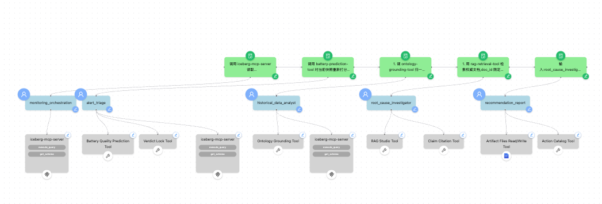
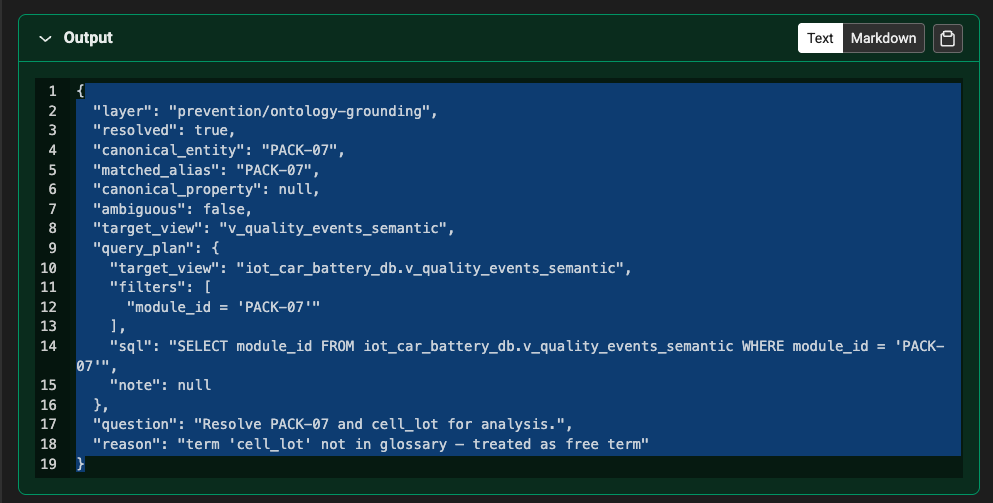
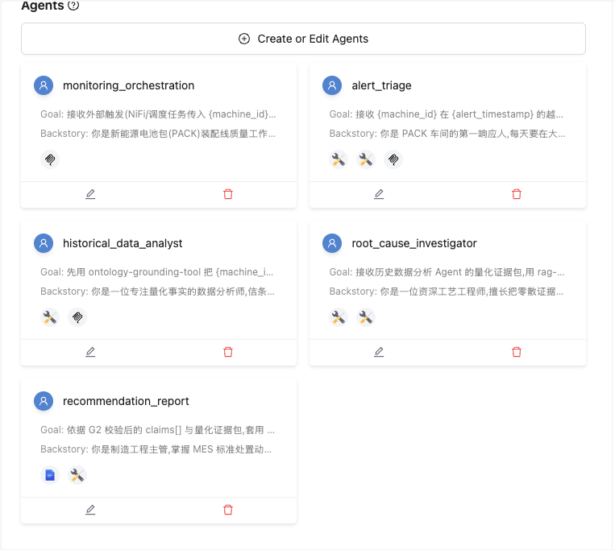

Anti-Hallucination Workflow: Semantic Grounding + Selective Guardrails (POC)¶
About this lab
A streamlined, 5-agent anti-hallucination hardening of the battery-pack QA workflow. It adds a prevention layer (semantic grounding) and a verification layer (selective guardrails + abstention), using three deterministic guardrails G1 / G2 / G4. When evidence is insufficient it abstains rather than fabricates — the abstention decision is gated by G2. The custom tools it uses are documented under the Tools section.
This lab drives hallucination down not by using a bigger model, but by two things:
- Prevention (knowledge layer) — the agent reads accurate data: canonical entity resolution +
glossary-constrained NL-to-SQL (
ontology-grounding-tool), plus authoritative document retrieval. - Verification (selective guardrails) — deterministic checks at key boundaries:
| Rail | Where | What | Tool |
|---|---|---|---|
| G1 | Triage | severity/defect_type come only from the ML tool; the LLM can't override |
g1-verdict-lock-tool |
| G2 | Investigation | every root-cause claim must cite an SOP clause or a real data row; unsourced / DOC-GEN-*-only claims are dropped |
g2-claim-citation-tool |
| G4 | Report | MES action codes come only from the approved catalog | g4-action-catalog-tool |
| Abstention | Report | if G2 leaves no compliant claims (or grounding was ambiguous), the report agent abstains / escalates instead of guessing | gated by G2 |
Design boundaries
Report is text + work order (no charts / operations dashboard); each run is independent (no
cross-session memory). For the fuller verification layer — an independent grounding verifier with
partial/conflicting-evidence handling — see the g3-grounding-verifier-tool.
Downloads¶
Grab everything
⬇ vehicle_manufacturing_lab_assets.zip — the complete asset bundle: data + setup scripts, the ML model (pre-trained .pkl + serving app), the prediction tool, all five guardrail/ontology tools, and the kb_docs/ RAG corpus. Unzip into your Cloudera AI project and follow the steps below.
Or grab individual pieces:
Data & setup scripts — battery_demo_data/
| Purpose | File |
|---|---|
| Create Iceberg tables | create_impala_tables_battery.py |
| Load demo data | load_data_to_impala_battery.py |
Governed semantic layer (dim_* + views) |
create_ontology_layer_battery.py |
Build the RAG corpus (kb_docs/) |
generate_kb_docs.py |
| (Re)generate demo data | generate_demo_data_battery.py |
ML model & serving — battery_model/ (the pre-trained .pkl files are in the bundle zip)
| Purpose | File |
|---|---|
| Train the models | train_battery_model.py |
| Serving app (FastAPI) | app.py |
| Application entry point | run_app.py |
| Deploy as a CAI Application | deploy_app.py |
| Dependencies | requirements.txt |
Battery prediction tool — Agent Studio custom tool
| Purpose | File |
|---|---|
| Tool source | tool.py |
| Dependencies | requirements.txt |
Guardrail & ontology tools — download each (source + requirements.txt + ontology.yaml) from its tool page:
Ontology Grounding ·
G1 Verdict Lock ·
G2 Claim Citation ·
G4 Action Catalog
(and G3 Grounding Verifier for the fuller verification layer).
Architecture (5 agents, sequential)¶

Monitoring → Triage (G1) → Historical Data Analyst (grounding) → Root-Cause Investigator (G2) → Recommendation & Report (G4 + abstention).
| # | Agent | Tools |
|---|---|---|
| 1 | Monitoring / alert | iceberg-mcp-server |
| 2 | Alert triage | battery-prediction-tool + g1-verdict-lock-tool (G1) |
| 3 | Historical Data Analyst (grounding) | ontology-grounding-tool + iceberg-mcp-server |
| 4 | Root-Cause Investigator (claims) | rag-retrieval-tool + g2-claim-citation-tool (G2) |
| 5 | Recommendation & Report (policy) | artifact-files-tool + g4-action-catalog-tool (G4) |
Workflow inputs (Test Session): machine_id and alert_timestamp — the two values an operator
supplies. defect_rate / risk_level are produced by the prediction tool in triage, not entered.
Prerequisites¶
- A Cloudera AI project with the battery-pack demo data loaded into
iot_car_battery_db(six Iceberg tables), theiceberg-mcp-server, and the Battery Quality Model App +battery-prediction-tool. - A RAG Studio knowledge base (
battery-knowledge-base) registered in Agent Studio asrag-retrieval-tool— built in Step 1. - The three guardrail tools and the prevention tool registered as Agent Studio Custom Tools:
ontology-grounding-tool,g1-verdict-lock-tool,g2-claim-citation-tool,g4-action-catalog-tool.
Step 1 — Seed data, ML models, and the RAG knowledge base¶
In your project's battery_demo_data/ folder, create the tables and load the demo data, then train
(or reuse the packaged) models:
cd battery_demo_data
python create_impala_tables_battery.py && python load_data_to_impala_battery.py
# models are packaged as .pkl; retrain only if you changed the data:
# (cd ../battery_model && python train_battery_model.py)
Build the RAG corpus — the document bodies aren't shipped, so generate them from the catalog:
Then in RAG Studio: create knowledge base battery-knowledge-base, upload the whole kb_docs/
folder, publish the retrieval endpoint, and register it in Agent Studio as rag-retrieval-tool.
The DOC-GEN-* files are the generic distractors G2 must reject.
Step 2 — Prevention: semantic grounding¶
Place ontology-grounding-tool on the Historical Data Analyst
agent, ahead of querying. It resolves colloquial entities/metric words to a canonical
part_number + canonical property and emits a constrained SELECT against the governed views
(v_part_semantic / v_quality_events_semantic), executed via iceberg-mcp-server. A polysemous
term it can't disambiguate returns ambiguous=true (no query_plan) so the agent asks rather than
guesses.
The ontology (TBox) — sample¶
The tool reads a bundled, git-versioned ontology.yaml. It maps colloquial identifiers to canonical
entities, defines glossary terms, and marks polysemous terms that require a business context:
entities:
PART-2026-BAT-MOD-07:
canonical_part_number: PART-2026-BAT-MOD-07
target_view: v_part_semantic
status_filter: RELEASED
aliases: [MOD-07, module 7, 7号模组, bracket 07, battery module 07]
# pack-line machine ids resolve too (PACK-02/03/05/07/11)
PACK-07:
canonical_part_number: PACK-07
target_view: v_quality_events_semantic
aliases: [PACK-07, pack 07, 7号电池包]
glossary:
# single-sense: colloquial term -> canonical property + governed view
material: {property: material_grade, view: v_part_semantic}
thermal_anomaly: {property: temperature_delta, view: module_eol_test_v, threshold: ">3σ or >31°C"}
# polysemous: same word, different property per business context.
# No resolving context -> ambiguous=true, and the agent must ask (never guess).
stock:
contexts: {ERP: account_stock, WMS: physical_stock, OMS: sellable_stock}
axioms:
authoritative_prefixes: ["SOP-", "COA-", "ECN-", "DRW-", "SPEC-", "WPS-"]
generic_prefixes: ["DOC-GEN-"]
require_status: RELEASED
Try it¶
# resolve + emit a constrained SELECT
python tool.py --user-params '{}' --tool-params '{"entity":"MOD-07","term":"material","context":"MES"}'
# polysemous term with no context -> ambiguous=true (ask, don't guess)
python tool.py --user-params '{}' --tool-params '{"term":"stock"}'
A resolved call returns the canonical entity, the canonical property, and a governed-view SELECT
filtered to status='RELEASED':

Step 3 — Register the three guardrail tools (G1 / G2 / G4)¶
In Agent Studio, Tools → Create Custom Tool, and register each (defaults are fine):
- G1 —
g1-verdict-lock-tool— locksseverity/defect_typeto the ML output. - G2 —
g2-claim-citation-tool— every claim must carry a validsource_id. - G4 —
g4-action-catalog-tool— MES actions restricted to the approved catalog.
Step 4 — Create the 5 Agents¶
Create a Sequential workflow Anti-Hallucination QA (Manager Agent OFF) and add the five
agents below in order. Download agents.yaml

Agent 1 — Monitoring Agent¶
| Field | Value |
|---|---|
| Name | Monitoring / Orchestration Agent |
| Role | Snapshot read + threshold check — the workflow entry point |
| Goal | Receive the external trigger ({machine_id}, {alert_timestamp}, and a metric snapshot); call iceberg-mcp-server to read the latest sensor_readings snapshot and compare to thresholds (temperature > 31°C or voltage_std > 0.015 = breach); package the alert context (machine_id, event_time, temperature, temperature_delta, voltage_std, press_force, cell_lot, alert_triggered=true) and hand off to the Alert Triage Agent; otherwise emit alert_triggered=false. |
| Backstory | You are the first stage of the battery-pack (PACK) assembly-line quality workflow, standing at the data entry point. The line streams per-station sensor readings into iot_car_battery_db. Your remit is narrow: pull the latest snapshot for {machine_id}, confirm a genuine threshold breach rather than jitter, and hand a clean, structured alert context to the next agent. You do not interpret or conclude. |
| Tools | iceberg-mcp-server |
Agent 2 — Alert Triage Agent (G1)¶
| Field | Value |
|---|---|
| Name | Alert Triage Agent |
| Role | ML re-score + verdict lock |
| Goal | Receive the breach alert for {machine_id} at {alert_timestamp}; call battery-prediction-tool to re-score the current snapshot (yielding defect_rate and risk_level), assign a severity, and route the investigation: HIGH (defect_rate ≥ 0.16), MEDIUM (0.08–0.12), INVESTIGATE (anomalous pattern). G1: immediately after, call g1-verdict-lock-tool on the ML output to lock severity and defect_type to the model's values — the LLM may not override or edit these two fields. |
| Backstory | You are the shop-floor first responder. You live by one rule: an alert is not a fact, and the authority for a numeric verdict comes from the model, never from a language model's "feel." You re-score with the prediction tool (IsolationForest anomaly_score + XGBoost risk_level), set severity, decide which tables/metrics the analyst should focus on, then pin severity/defect_type with G1. You only triage and route — no recommendations. |
| Tools | battery-prediction-tool, g1-verdict-lock-tool, iceberg-mcp-server |
Agent 3 — Historical Data Analyst (prevention)¶
| Field | Value |
|---|---|
| Name | Historical Data Analyst |
| Role | Semantic grounding + governed querying |
| Goal | First call ontology-grounding-tool to resolve {machine_id}, colloquial metric words, and cell_lot to canonical entities/properties and obtain a constrained SELECT against the governed views; if ambiguous=true, flag needs_clarification and stop inferring. Then, via iceberg-mcp-server, run a 30-day same-machine baseline z-score and a same-cell_lot cross-comparison, and emit a quantitative evidence bundle (conclusion=FACTS_ONLY) plus evidence_sources (table/column/row per number). |
| Backstory | You are a data analyst devoted to quantitative facts, with one creed: "only state numbers that have a source." Hallucination often starts at the source — mapping "module 7" or "stock" onto the wrong entity or metric. So you resolve first, query only governed RELEASED views, and when a term can't be disambiguated you flag needs_clarification and ask rather than guess. Root cause belongs to the downstream investigator; you never conclude early. |
| Tools | ontology-grounding-tool, iceberg-mcp-server |
Agent 4 — Root-Cause Investigator (G2)¶
| Field | Value |
|---|---|
| Name | Root-Cause Investigator |
| Role | Authoritative retrieval + cited claim contract |
| Goal | Take the analyst's evidence bundle; use rag-retrieval-tool to retrieve authoritative documents (thermal-management SOPs, incoming COAs, supplier ECNs, engineering drawings DRW), restricting doc_id to authoritative prefixes SOP-* / COA-* / ECN-* / DRW-*, top_k=5; synthesize the root cause into a structured claim contract claims[] (each with claim / source_ids / confidence). G2: call g2-claim-citation-tool on claims[] — every claim must carry a valid source_id (an SOP clause or a real data row); repair or drop any non_compliant claim, no unsourced assertions. |
| Backstory | You are a senior process engineer who threads scattered evidence into a traceable causal chain. What you deliver is independently verifiable "evidence + claims", where every judgment can be followed by its source_id back to an authoritative document clause or a real data row. If retrieval only hits generic docs (DOC-GEN-*), you never draw a root cause from them — that is exactly how hallucination creeps in. You hand the G2-checked claims[] to the report agent. |
| Tools | rag-retrieval-tool, g2-claim-citation-tool |
Agent 5 — Recommendation & Report Agent (G4)¶
| Field | Value |
|---|---|
| Name | Recommendation & Report Agent |
| Role | Response policy + MES work order / abstention |
| Goal | Using the G2-checked claims[] and the evidence bundle, apply the response policy: all claims compliant → answer_with_citations (full report + work_order); partly compliant → answer_supported_only (write only the supported part, escalate the rest); no compliant claims or needs_clarification=true → abstain (produce an abstention_notice, no work order). G4: before writing the work order, call g4-action-catalog-tool on the proposed actions[] — only the catalog's valid_actions may be issued. Write the report and work_order_{machine_id}.json via artifact-files-tool. |
| Backstory | You are the manufacturing engineering lead who owns the MES action catalog and is accountable for what reaches the floor. Your criterion is evidence sufficiency, not plausibility: enough evidence → a fully cited report; partial → write that part and escalate the rest; insufficient → don't write a root cause or work order, produce an abstention_notice instead. "I can't confirm, escalated" beats a plausible but unsourced conclusion — abstention is compliance, not failure. |
| Tools | artifact-files-tool, g4-action-catalog-tool |
Step 5 — Create the 5 Tasks¶
Create one task per agent, in order — each task's context chains it to the previous one.
Download tasks.yaml
Task 1 — monitoring_task → Monitoring Agent¶
Description:
Call
iceberg-mcp-serverto read the latest snapshot of{machine_id}fromiot_car_battery_db.sensor_readingsand compare to thresholds (temperature > 31°C or voltage_std > 0.015 = breach). On breach, package the alert context; otherwise emitalert_triggered=false.
Expected output:
{
"machine_id": "PACK-07",
"event_time": "2026-06-24T13:20:00",
"temperature": 33.4,
"temperature_delta": 3.9,
"voltage_std": 0.021,
"press_force": 3.05,
"cell_lot": "LOT-2026-0619",
"alert_triggered": true
}
Task 2 — alert_triage_task → Alert Triage Agent¶
Context: monitoring_task
Description:
Call
battery-prediction-toolto re-score the current snapshot, set severity by defect_rate (HIGH / MEDIUM / INVESTIGATE), and name the tables/metrics the analyst should query. G1: callg1-verdict-lock-toolon the ML output to lockseverity/defect_type— the LLM may not change them.
Expected output (severity/defect_type locked by G1):
{
"machine_id": "PACK-07",
"severity": "HIGH",
"defect_type": "module_electrical_consistency_anomaly",
"risk_level": "HIGH",
"confidence": 0.933,
"ml_locked": true,
"route_to_analyst": {
"tables": ["sensor_readings", "quality_events"],
"metrics": ["temperature", "temperature_delta", "voltage_std"]
}
}
Task 3 — historical_analysis_task → Historical Data Analyst¶
Context: alert_triage_task
Description:
- Call
ontology-grounding-toolto resolve{machine_id}, colloquial metric words, and cell_lot and obtain a constrained SELECT; ifambiguous=true→ setneeds_clarification=trueand stop querying.- Via
iceberg-mcp-server, run the 30-day baseline z-score and the same-cell_lot cross-comparison.- Package the evidence bundle with
evidence_sources(table/column/event_time/value per row). Facts only;conclusionis alwaysFACTS_ONLY.
Expected output:
{
"canonical_part_number": "PART-2026-BAT-MOD-07",
"cell_lot": "LOT-2026-0619",
"temperature_baseline_mu": 28.6,
"temperature_baseline_sigma": 0.7,
"temperature_peak": 33.4,
"z_score": 6.9,
"voltage_std_normal": 0.011,
"voltage_std_peak": 0.021,
"peer_packs": ["PACK-03", "PACK-05"],
"evidence_sources": [
{"table": "sensor_readings", "column": "temperature", "event_time": "2026-06-24T13:20:00", "value": 33.4}
],
"needs_clarification": false,
"conclusion": "FACTS_ONLY"
}
Task 4 — root_cause_investigation → Root-Cause Investigator¶
Context: historical_analysis_task
Description:
- Use
rag-retrieval-toolover authoritative docs, restricting doc_id to authoritative prefixesSOP-* / COA-* / ECN-* / DRW-*, top_k=5.- Synthesize the evidence bundle + retrieved docs into a claim contract
claims[](each: claim / source_ids / confidence).- G2: call
g2-claim-citation-toolonclaims[]; drop or re-source any non_compliant claim;DOC-GEN-*-only hits may not be used as a root-cause basis.
Expected output (G2-checked):
{
"claims": [
{
"claim": "Thermal-runaway risk stems from high incoming DCR of cell lot LOT-2026-0619",
"source_ids": ["COA-0619", "ECN-2026-0311", "z_score=6.9"],
"confidence": 0.86
}
],
"rag_docs": ["SOP-THM-042", "COA-0619", "ECN-2026-0311"],
"g2_all_compliant": true,
"dropped_claims": []
}
Task 5 — recommendation_report_task → Recommendation & Report Agent¶
Context: root_cause_investigation
Description:
Input: the G2-checked
claims[]and the evidence bundle. 1. Decideresponse_policyfrom G2 results: all compliant →answer_with_citations; partly compliant →answer_supported_only; no compliant claims orneeds_clarification=true→abstain. 2. G4: callg4-action-catalog-toolon the proposed actions[]; keep only valid_actions. 3. Emit per policy:answer_with_citations→ report +work_order_{machine_id}.json(cited);answer_supported_only→ supported part only + escalate note;abstain→ abstention_notice, no work order.
Expected output — grounded (answer_with_citations):
{
"machine_id": "PACK-07",
"response_policy": "answer_with_citations",
"root_cause": "High incoming DCR of cell lot LOT-2026-0619 drove the module thermal anomaly and elevated voltage spread",
"actions": [
{"code": "QLT-ISOLATE-LOT", "description": "Isolate lot LOT-2026-0619 and re-inspect in-process modules", "priority": "P1"},
{"code": "QLT-RECHECK-DCR", "description": "Tighten incoming DCR re-test for this lot", "priority": "P2"}
],
"evidence_refs": ["SOP-THM-042 §4.2", "COA-0619", "z_score=6.9"],
"confidence": 0.86
}
Expected output — abstain (e.g. PACK-11, no authoritative root-cause doc):
{
"response_policy": "abstain",
"reason": "No authoritative source supports a root cause; retrieval hit only DOC-GEN-* generic docs",
"missing_evidence": ["No authoritative SOP/COA/ECN for PACK-11 intermittent voltage spread"],
"supported_facts": ["voltage_std intermittently elevated (z_score=3.1), but no authoritative root-cause doc"],
"escalate_to": "process engineer"
}
Step 6 — Run & verify¶
Run the workflow in Agent Studio's Test Session. It has two inputs — enter a real incident:
- Perfect (grounded report):
machine_id = PACK-07,alert_timestamp = 2026-06-24T13:20:00Z— a real HIGH incident (defect_rate ≈ 0.19) whose cell lotLOT-2026-0619has authoritative docs. - Abstention (the headline):
machine_id = PACK-11,alert_timestamp = 2026-06-24T09:20:00Z— a real INVESTIGATE case whose root cause has no authoritative doc.
| Check | Expected |
|---|---|
| Prevention resolves + emits SQL | MOD-07 → PART-2026-BAT-MOD-07, constrained SELECT vs v_part_semantic, status='RELEASED' |
| Prevention flags ambiguity | stock (no context) → ambiguous=true, no query_plan → agent asks |
| RAG corpus present | kb_docs/ = 30 files (5 authoritative + 25 DOC-GEN-*) |
| G1 lock | triage severity/defect_type == ML output, not LLM-altered |
| G2 citation gate | every claim has a valid source_id; DOC-GEN-*-only claims dropped |
| G4 action catalog | work order contains only approved MES action codes |
| Abstain (PACK-11) | root cause only in DOC-GEN-* → G2 drops it → abstention_notice, no fabricated root cause |
The counter-example that proves the point¶
Ask about PACK-11 — its intermittent voltage-spread has no single authoritative root-cause doc.
Retrieval hits only DOC-GEN-* generic docs → G2 drops the unsourced claim → the report agent
abstains and escalates instead of fabricating a plausible root cause. That is the anti-hallucination
win: the answer is only ever as good as the authoritative evidence, and when there is none, the system
escalates instead of guessing.